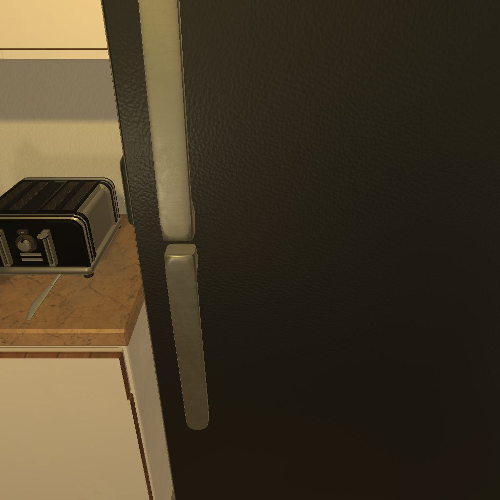

---------------------------------------------------------task: 14---------------------------------------------------------
--------------------------------------------------------------------------------------------------------------------------------------------------------------------
--------------------------------------------------------------------------------------------------------------------------------------------------------------------
Step:--------------------------------------------------------------------------4-------------------------------------------------------------------------------
----------------------------------------
VLM Prompt:
Image1:
Image2:
Image3:
**Instruction**
1. Analyze the provided images to identify all visible household objects and compare the difference between images (e.h. whether the object is opened or not and taken on hand or not), focusing on those relevant to the task description "put a cool apple in countertop."
2. Use the analysis of images and the task hint "The agent must find an object of the desired type, pick it up, go to a fridge, cool the object with the fridge, then find the correct location to place it, and put it down there. The agent does not need to use the fridge button or open the fridge to cool the object, and the agent just needs to do action that is "cool the object with the fridge"." to answer the question: what is the most reasonable action in the choices for the task description "put a cool apple in countertop"?
3. Decide and write the answer using the template: The answer is: (i): , where i is the real number. If there is no desired object in images, search every place based on **Initial Observation** to find the object. And if no one is exactly correct, choose a similar answer.
**Initial Observation**
You are in the middle of a room. Looking quickly around you, you can see microwave (1), countertop (1-2), cabinet (1-11), diningtable (1), drawer (1-3), sink (1), sinkbasin (1), toaster (1), stoveburner (1-4), fridge (1), coffeemachine (1), garbagecan (1)
**Answer Choices**
(1): go to microwave 1
(2): go to cabinet 1
(3): go to diningtable 1
(4): go to drawer 1
(5): go to sink 1
(6): go to cabinet 2
(7): go to cabinet 3
(8): go to sinkbasin 1
(9): go to cabinet 4
(10): go to cabinet 5
(11): go to drawer 2
(12): go to toaster 1
(13): go to cabinet 6
(14): go to stoveburner 1
(15): go to cabinet 7
(16): go to fridge 1
(17): go to stoveburner 2
(18): go to stoveburner 3
(19): go to stoveburner 4
(20): go to drawer 3
(21): go to cabinet 8
(22): go to cabinet 9
(23): go to cabinet 10
(24): go to coffeemachine 1
(25): go to cabinet 11
(26): go to garbagecan 1
(27): take pan 1 from countertop 2
(28): take winebottle 2 from countertop 2
(29): take winebottle 1 from countertop 2
(30): take saltshaker 1 from countertop 2
(31): take apple 1 from countertop 2
(32): take stoveknob 1 from countertop 2
(33): take stoveknob 2 from countertop 2
(34): take butterknife 1 from countertop 2
(35): examine countertop 2
**Answer**
Let's think step by step by following the instructions.
----------------------------------------
----------------------------------------
Original Response:
Firstly, we need to identify all visible household objects in the images provided. In Image 1, we can see a part of a fridge (fridge 1). In Image 2, we can see a microwave (microwave 1) on the countertop. In Image 3, we can see a toaster (toaster 1) and several objects on the countertop, such as wine bottles (winebottle 1 and winebottle 2), a salt shaker (saltshaker 1), and an apple (apple 1).
The task description is "put a cool apple in countertop." Based on the analysis, there is an apple (apple 1) on the countertop in Image 3. The task hint tells us that the agent must find an object of the desired type, pick it up, go to a fridge, cool the object with the fridge, then find the correct location to place it, and put it down there. The agent does not need to use the fridge button or open the fridge to cool the object, and the agent just needs to do action that is "cool the object with the fridge."
Since we have identified an apple on the countertop, the next reasonable action would be to pick up the apple and then go to the fridge to cool it. However, since the agent does not need to use the fridge button or open the fridge to cool the object, we can conclude that just being near the fridge will cool the object.
Therefore, the most reasonable action from the choices for the task description "put a cool apple in countertop" would be to first take the apple and then go to the fridge. Since "take apple 1 from countertop 2" is an option and "go to fridge 1" is also an option, we will select these actions.
The answer is: (31): take apple 1 from countertop 2 and then (16): go to fridge 1.
----------------------------------------
----------------------------------------
>>> Refine Original VLM Response and Get Pure Action: take apple 1 from countertop 2 and then (16): go to fridge 1
----------------------------------------
-----------------------------------------------------------------
Running time: 20.54280114173889 seconds
Total Money: 7.790970000000007
-----------------------------------------------------------------
-----------------------------------------------------------------
Text Observation:Nothing happens.
-----------------------------------------------------------------
UNSUCCEED